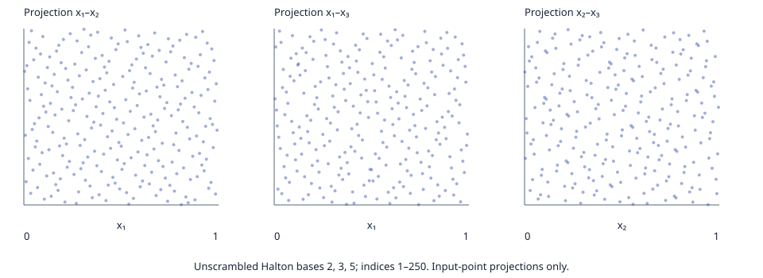

One 250-point, three-dimensional unscrambled Halton input (bases 2, 3, 5; index starts at 1). Five LP reducers ran with one warmup and five measured calls each. Every reducer result is checked by an independent exact-rational validator that verifies each removal certificate and its acyclic expansion to the retained source points. The check proves equality of the finite input hull and returned hull, including when the reducer conservatively retains redundant points.
QuickHull is recorded as unsupported because the registered geometric implementation is 2D-only. The plotted projections show input points only, not hull outlines.

| method | warmups | measured | independently_verified | reducer_complete | retained_median | elapsed_median_ms | elapsed_min_ms | elapsed_max_ms | performance_verdict |
|---|---|---|---|---|---|---|---|---|---|
| lp-membership-baseline | 1 | 5 | 5/5 | 0/5 | 250 | 80.024267 | 79.453591 | 84.303747 | descriptive only; no speedup claim; limiter not source-profiled |
| basis-reuse-related-to-A43 | 1 | 5 | 5/5 | 5/5 | 250 | 1.469539 | 1.462764 | 1.499432 | descriptive only; no speedup claim; limiter not source-profiled |
| ordered-membership-related-to-A44 | 1 | 5 | 5/5 | 0/5 | 250 | 80.625254 | 79.695033 | 81.543813 | descriptive only; no speedup claim; limiter not source-profiled |
| A43-certificate-safe-basis-adaptation | 1 | 5 | 5/5 | 0/5 | 250 | 81.183639 | 80.926971 | 83.794810 | descriptive only; no speedup claim; limiter not source-profiled |
| A44-incremental-LP-farthest-seed | 1 | 5 | 5/5 | 0/5 | 250 | 135.111486 | 134.887225 | 135.302433 | descriptive only; no speedup claim; limiter not source-profiled |
| geometric-quickhull | 6 | 0 | 0 | n/a | n/a | unsupported in 3D |